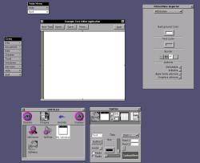

|
Before NeXT Computer Inc. revolutionized software developement
with its OpenStep API, a new way of designing graphical user interfaces was
already introduced by NeXT at the beginning of the 90s. Its operating system NeXTstep
featured Interface Builder, an application that for the first time allowed developers
to quickly create nice user interfaces without having to code everything manually.
Using drag & drop elements of windows such as buttons, sliders, textfields etc were
created abd edited, then linked to functions and variables.
Thus, Interface Builder helped developers to focus on the code for the actual
functions without having to care about stuff not related to their project goal.
|
|
As part of the GNUstep project, Gorm is meant to be the
counter part to NeXT's Interface Builder. With Gorm designing tough and complex
graphical interfaces for your applications can easy and quickly be done using drag & drop,
powerful inspectors and teamwork with ProjectCenter.
Gorm allows developers to quickly create and edit graphical application
interfaces using a whole lot of GUI elements: windows, menus, buttons, labels, sliders, tables,
textfields, browsers, images, altert panels and more. Custom palettes can
be dynamically loaded to add additional elements or functionality.
|
|

|
|
After creating the interface, objects can be linked using mouse
operations. Also Gorm features interactive testing of interfaces.
Currently Gorm gets extended with new elements and inspectors to
get every common GUI object included in the standard palettes. Doing this is relatively
easy now as all the insptectors are now created using Gorm itself.
|